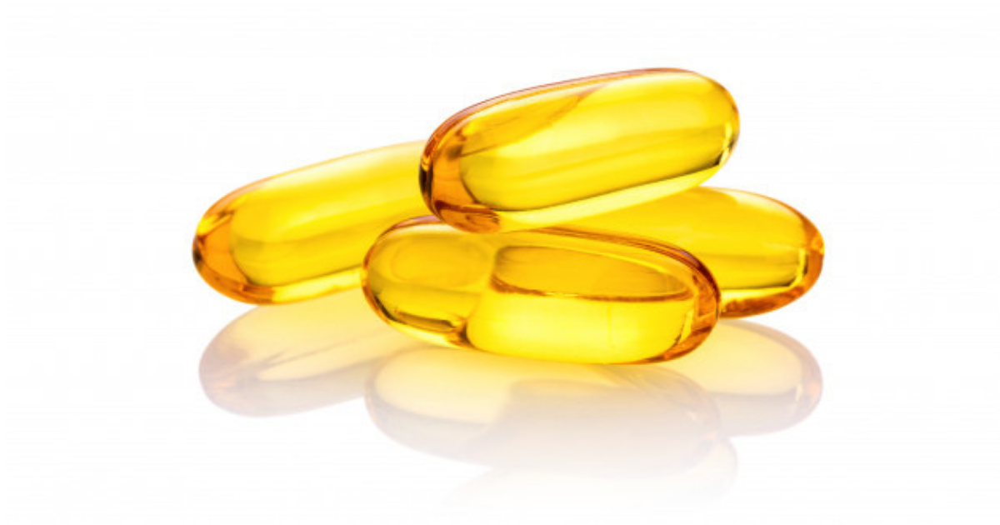

ကလေးငယ်များအတွက် ငါးကြီးဆီ- Cod Liver Oil ကောင်းကျိုးများ

ကျန်းမာကြံ့ခိုင်တဲ့ ကလေးတစ်ယောက်ဖြစ်ဖို့ဆို စားသောက်တဲ့ အစားအစာတွေကလည်း အရမ်းအရေးကြီးပါတယ်။ ကလေးတစ်ယောက် စားသောက်မှုစနစ်နဲ့ ဘာတွေစားသလဲဆိုတဲ့အချက်က အဲဒီ ကလေးရဲ့ ရုပ်ပိုင်း၊ စိတ်ပိုင်းဆိုင်ရာ ဖွံ့ဖြိုးမှုအပေါ် အများကြီး သက်ရောက်ပါတယ်။ ဒါကြောင့်မို့ မိဘတွေအနေနဲ့ ကိုယ့်ကလေးငယ်ကို ဘာတွေ စနစ်တကျ ကျွေးရမလဲဆိုတာ သိထားသင့်ပါတယ်။ အခု တစ်ခေါက်မှာတော့ ကလေးငယ်တွေအတွက် လိုအပ်တဲ့အာဟာရဓာတ်တွေပေးစွမ်းနိုင်တဲ့ ငါးကြီးဆီ အကြောင်းနဲ့သူ့ရဲ့ အကျိုးကျေးဇူးတွေအကြောင်းပြောပြချင်ပါတယ်။
Cod Liver Oil – ငါးကြီးဆီ ကို ဘယ်က ရလဲ
သူ့ရဲ့နာမည်အတိုင်းပဲ ငါးကြီးဆီ – Cod Liver Oil ဆိုတာ Cod ငါးရဲ့ အသည်းက ထုတ်ယူထားတဲ့ အဆီဖြစ်ပြီး ဗီတာမင် အေ နဲ့ ဒီ ဓာတ်တွေ အများကြီး ပါဝင်နေပါတယ်။ ဒါ့အပြင် အိုမီဂါ ၃ ဖက်တီးအက်စစ်တွေလည်း အများကြီး ပါပါတယ်။ ငါးကြီးဆီကို ကိုထုတ်လုပ်ပုံအရ နှစ် မျိုး နှစ် စား ခွဲခြားလို့ရပါတယ်။
၁။ ပုံမှန်ထုတ်ယူထားတဲ့ ငါးကြီးဆီ – Cod ငါးရဲ့အသည်းက အဆီကို ထုတ်ယူပြီး မြင့်မားတဲ့ အပူချိန်နဲ့ ထိတွေ့ပြုပြင်ထုတ်လုပ်ထားတာ ဖြစ်ပါတယ်။ အဆီထဲကို တခြားဗီတာမင်ဓာတ်တွေ ထပ်ပေါင်းထည့်ပြီး အားဆေးအနေနဲ့ မှီဝဲနိုင်ပါတယ်။
၂။ အချဉ်ဖောက်ထားတဲ့ ငါးကြီးဆီ – အဆီကို ထုတ်ယူပြီး အပူမပေးတော့ဘဲ ၆ လ ကနေ တစ်နှစ်ကြာတဲ့အထိ အချဉ်ဖောက်ပါတယ်။ ဒီလို သဘာဝအတိုင်း ရရှိလာတဲ့ အဆီဓာတ်ကို အစားအသောက်နဲ့တွဲဖက်ပြီး စားသုံးနိုင်ပါတယ်။
ငါးကြီးဆီကို အပေါ်က နည်း နှစ်မျိုးနဲ့ ရရှိနိုင်တယ်ဆိုပေမဲ့ ကလေးငယ်တွေအတွက်ရော ဘယ်လိုပုံစံနဲ့ စားသုံးတာက အကောင်းဆုံးဖြစ်ပါမလဲ? အရင်ဆုံး ငါးကြီးဆီကို ကလေးတွေ စားသုံးသင့်၊ မသင့်ကို အရင်ပြောပြပါ့မယ်။
ငါးကြီးဆီကို ကလေးတွေ သောက်သုံးလို့ရလား?
ငါးကြီးဆီကို သင့်တော်တဲ့ပမာဏအတိုင်း သောက်သုံးမယ်ဆို ကလေးငယ်တွေအတွက်လည်း သင့်တော်တာကို တွေ့ရှိရပါတယ်။ သောက်သုံးရုံတင်မကဘဲ ခန္ဓာကိုယ်ပြင်ပက ဒဏ်ရာ၊ မီးလောင်နာ၊ အင်ပြင်တွေအတွက်လည်း အသုံးပြုနိုင်ပါတယ်။
ဘယ်လောက် သုံးစွဲသင့်သလဲ
ကလေးတွေအတွက် ဘယ်လောက်သောက်သုံးရမယ်၊ သုံးစွဲရမယ် ဆိုပြီး သတ်မှတ်ထားတာမျိုးတော့ မရှိသေးပါဘူး။ အကောင်းဆုံးကတော့ ကလေးငယ်ကို ငါးကြီးဆီ မတိုက်ခင် ဆရာဝန်နဲ့အရင် ပြသဆွေးနွေးကြည့်သင့်ပါတယ်။ ဒါမှ ဆရာဝန်အနေနဲ့ ကလေးရဲ့လိုအပ်ချက်အလိုက် ပေးသင့် မပေးသင့်၊ ပေးမယ်ဆိုလည်း လိုအပ်တဲ့ပမာဏကို တွက်ချက်ပေးနိုင်ပါတယ်။
ငါးကြီးဆီ က ကလေးတွေအတွက် ဘယ်လို ကောင်းကျိုးတွေ ပေးသလဲ
ငါးကြီးဆီ သောက်သုံးရင် အောက်ပါ အကျိုးကျေးဇူးတွေ ရရှိခံစားရမှာပဲ ဖြစ်ပါတယ်။
၁။ အရိုးပျော့ရောဂါမှ ကာကွယ်ပေးတယ်
ကလေးငယ်တွေမှာ ဗီတာမင် ဒီ ဓာတ် ချို့တဲ့ရင် အရိုးပျော့ရောဂါ ခံစားရတတ်ပါတယ်။ ခြေထောက်လေးတွေ ကွေးနေတာ၊ ရင်သားအရိုးတွေ ကြီးထွားမှု မမှန်တာ၊ လက်ကောက်ဝတ်၊ ခြေချင်းဝတ်တွေ ကြီးမားနေတာတွေက အရိုးပျော့ရောဂါရဲ့ လက္ခဏာတွေပဲ ဖြစ်ပါတယ်။ ငါးကြီးဆီထဲမှာ ဗီတာမင် ဒီ ဓာတ်တွေ အများကြီး ပါဝင်နေပြီး လက်ဖက်ရည်ဇွန်း တစ်ဇွန်းစာနဲ့တင် တစ်နေ့တာအတွက် လုံလောက်တဲ့ ဗီတာမင်တွေ ရရှိစေမှာပါ။
၂။ အသက်ရှူလမ်းကြောင်းဆိုင်ရာ ရောဂါတချို့ကို ကာကွယ်ပေးတယ်
လေ့လာမှုတွေအရ ငါးကြီးဆီကို မှီဝဲရင် (အထူးသဖြင့်) ဆောင်းရာသီမှာ ခံစားရတတ်တဲ့ အသက်ရှူလမ်းကြောင်းဆိုင်ရာ ရောဂါတချို့ကို ကာကွယ်ပေးနိုင်ပါတယ်။
၃။ နားအတွင်းပိုးဝင်တာကို လျှော့ချပေးတယ်
ငါးကြီးဆီကို တခြား ဗီတာမင်အားဆေးတွေနဲ့ မှန်မှန် သောက်သုံးပေးနေမယ်ဆို ကလေးငယ်တွေမှာ အဖြစ်များတဲ့ နားလမ်းကြောင်းတွင်း ပိုးဝင်တဲ့ ပြဿနာကို လျှော့ချပေးနိုင်ပါတယ်။
၄။ မျက်စိ အားကောင်းစေတယ်
ငါးကြီးဆီမှာ အမြင်အာရုံအားကောင်းစေတဲ့ ဗီတာမင် အေ ဓာတ် အများကြီး ပါဝင်ပါတယ်။ ဒါကြောင့် မှန်မှန ်သောက်သုံးမယ်ဆို ညဘက်အမြင်အာရုံ ကောင်းမွန်စေပြီး ပိုးဝင်တာကနေလည်း ကာကွယ်ပေးနိုင်တာကို တွေ့ရပါတယ်။
၅။ အာရုံစူးစိုက်မှု အားကောင်းစေတယ်
ငါးကြီးဆီ ထဲမှာ အိုမီဂါ ၃ ဖက်တီးအက်စစ်တွေ အများကြီး ပါဝင်တာကြောင့် အသက် ၇ နှစ် ကနေ ၁၂ နှစ် ကြားကလေးတွေ ခံစားရတတ်တဲ့ အာရုံစူးစိုက်မှု အားနည်းတဲ့ ပြဿနာကိုလည်း သက်သာစေပါတယ်။
ငါးကြီးဆီ သောက်သုံးရင် ဘေးထွက် ဆိုးကျိုးတွေ ရှိမလား?
အကျိုးဖြစ်စေတဲ့ အချက်တွေ ရှိသလို မေ့လျော့ မထားသင့်တဲ့ ဘေးထွက်ဆိုးကျိုး တချို့လည်း ရှိနေပြန်ပါတယ်။ အဖြစ်များတဲ့ ပြဿနာတွေကတော့-
အသက်ရှူထုတ်လိုက်သောအခါတွင် အနံ့ဆိုးရခြင်း
ရင်ပူခြင်း
လေချဉ်တက်ခြင်း
ဝမ်းပျော့ပျော့သွားခြင်း
ပျို့တက်ခြင်း စတာတွေပဲ ဖြစ်ပါတယ်။
ဒါတွေက မကြာမကြာတွေ့နိုင်တဲ့ ဘေးထွက်ဆိုးကျိုးတွေ ဖြစ်ပြီး သူ့အလိုလို သက်သာသွားတတ်ပါတယ်။ ပင်လယ်စာနဲ့ မတည့်တာ၊ ဆေးပမာဏ အရမ်းများသွားရင်တော့ ပိုဆိုးတဲ့ လက္ခဏာတွေ ခံစားရနိုင်ပါတယ်။
ငါးကြီးဆီနဲ့ မတည့်ရင် ဘာတွေဖြစ်နိုင်သလဲ
တချို့ကလေးငယ်တွေက အစားအစာတစ်မျိုးမျိုးနဲ့ မတည့်တာမျိုး ရှိတတ်ပါတယ်။ ပင်လယ်စာတွေနဲ့ မတည့်တာမျိုး အတွေ့ရများတာကြောင့် သတိထားသင့်ပါတယ်။ ငါးကြီးဆီနဲ့ မတည့်တဲ့ကလေးဆိုရင် သောက်သုံးပြီး အောက်ပါလက္ခဏာတွေ ဖြစ်ပွားနိုင်ပါတယ်။
အော့အန်ခြင်း
ဝမ်းလျှောခြင်း
အင်ပြင်များထခြင်း
ဒီလက္ခဏာတွေက တစ်ခုချင်း ဖြစ်နိုင်သလို အားလုံးပေါင်းပြီးလည်း ခံစားရနိုင်ပါတယ်။
အစကတည်းက ကလေးမှာ ပန်းနာရင်ကျပ်၊ အရေပြားပြဿနာ တစ်ခုခုရှိနေရင် ပိုပြီး ဆိုးဆိုးရွားရွား ခံစားရနိုင်ပါတယ်။ ဓာတ်မတည့်တာအပြင် ဗီတာမင် အေ နဲ့ ဒီ ဓာတ်ကို လိုအပ်တာထပ် ပိုသောက်သုံးမိရင်လည်း အရိုးတွေအားနည်းသွားတာ၊ သွေးတွင်း သကြားဓာတ် ကျဆင်းသွားတာတွေ ခံစားရမှာ ဖြစ်ပါတယ်။
နောက်ပြီး တစ်ခုဖြည့်ပြောရရင် ငါးကြီးဆီရဲ့ အနံ့က ညှီစို့စို့အနံ့ရတာကြောင့် ကလေး အတော်များများက သောက်ဖို့ ငြင်းဆန်တတ်ကြပါတယ်။ ဒါကြောင့် ကလေးတွေအတွက် အဝင်မဆိုးအောင် ဘယ်လို တိုက်ကျွေးရမလဲဆိုတာ ဆက်ပြောပြပါ့မယ်။
ငါးကြီးဆီကို ကလေးတွေသောက်ချင်အောင် ဘယ်လို တိုက်မလဲ
ညှီစို့စို့အနံ့ရှိတာကြောင့် ဒီအတိုင်းတိုက်မယ်ဆို ကလေးအတော်များများ သောက်ဖို့ငြင်းဆန်ကြမှာပါပဲ။ ဒါကြောင့် ကလေးတွေသောက်ရလွယ်ကူအောင် အောက်ပါ နည်းလမ်းလေးတွေ သုံးလို့ရပါတယ်။
ငါးကြီးဆီကို ဝါးစားလို့ရတဲ့ ဆေးပြားလေးတွေပုံစံနဲ့ ထုတ်လုပ်ထားတာမျိုး ရှိပါတယ်။
ကလေးတွေအတွက် အဝင်လွယ်အောင် အရသာသွင်းထားတဲ့ ငါးကြီးဆီ အမျိုးအစားတွေ ရှိပါတယ်။ ဒီလိုဆိုတော့ ငါးညှီနံ့ သိပ်မရတော့ဘူးပေါ့။
ကလေးသောက်မယ့် ငါးကြီးဆီကို သူတို့ကြိုက်တဲ့ အစားအစာ၊ သစ်သီးဖျော်ရည်ထဲရောထည့်ပြီး တိုက်ကျွေးလို့ ရပါတယ်။
ပျားရည် ဒါမှမဟုတ် သကြားရည်နဲ့ ရောနှောပြီး တိုက်ကျွေးလို့လည်း ရပါတယ်။
နိဂုံးအနေနဲ့ ပြောချင်တာက ငါးကြီးဆီကို သောက်သုံးတာက ကလေး ကျန်းမာရေးအတွက် တစ်ဖက်တစ်လမ်းက အကျိုးရှိစေပါတယ်။ ဒါပေမဲ့ ဆရာဝန်နဲ့ မတိုင်ပင်ထားဘဲ ကိုယ့်ဘာသာ ဝယ်တိုက်တာမျိုးတော့ မပြုလုပ်သင့်ပါဘူး။ သောက်သုံးရမယ့် ပမာဏထပ်များသွားရင် ဘေးထွက်ဆိုးကျိုးလေးတွေ ရှိလို့ပါ။ နောက်ပြီး ဘယ်လိုပဲ တိုက်ဖို့ကြိုးစား ကြိုးစား ကလေးကသောက်ဖို့ ငြင်းဆန်ရင် လုံး၀ အတင်းအကြပ် မတိုက်ပါနဲ့။ မသောက်ချင်ဘဲ အတင်းမျိုချရတာကြောင့် ပြန်ပျို့အန်ထွက်တာ၊ နင်သွားတာမျိုးဖြစ်ရင် ကလေးအတွက် မကောင်းပါဘူး။
Source-Dr. Oliver